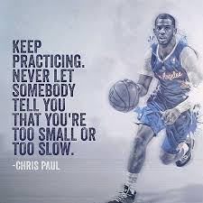
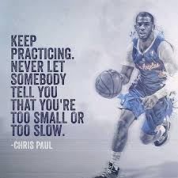

Society Basketball
Basketball club to everyone
 



NBA
Posted on 17.30 WIB, 08 April 2020
Remy Martin mendeklarasikan diri untuk mengikuti NBA Draft 2020. Garda keturunan Filipina-Amerika Serikat itu berusaha mengejar mimpinya menjadi pemain pro. Ia mengumumkan deklarasinya via Instagram. Martin merupakan garda Arizona State University (ASU). Ia sudah bermain di sana selama tiga tahun. Martin kini bersiap untuk meninggalkan kampus.
View MoreDBL
03 April 2020
Sebagian orang hanya bisa bermimpi menjadi pemain pro. Sebagian lainnya berusaha mewujudkannya. Begitulah dunia, ada banyak ragam jalan pikir manusia. Aimee Tampu Francienne, siswi SMAN 4 Yogyakarta (Patbhe), boleh jadi yang kedua. Ia tidak ingin bermimpi saja. Namun, meniti arahnya sendiri untuk menjadi seorang pro. Ia melakukannya.
View MoreTraining Schedule

Training Schedule
Monday 13.30 - 17.30
Tuesday 13.30 - 17.30
Wednesday 16.00 - 18.00
View more